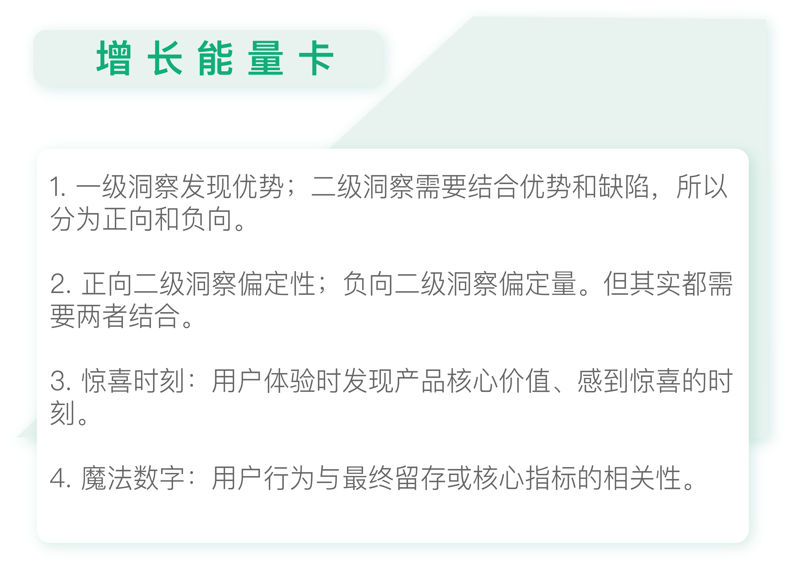

- 00 开篇词 人人都是增长官.md.html
- 01 预习 增长小白如何“弯道超车”？.md.html
- 02 预习 如何理解“增长”？.md.html
- 03 预习 不同职能如何做好增长？.md.html
- 04 预习 做增长如何处理职能间的矛盾？.md.html
- 05 正确目标找不对，天天加班也枉然.md.html
- 06 活学活用北极星指标.md.html
- 07 OKR如何助力增长？.md.html
- 08 不懂用户调研？那就对了！.md.html
- 09 调研目标：在差异性洞察中找到爆破点.md.html
- 10 数据分析：在“花式对比”中发现玄机.md.html
- 11 用户分类：围绕北极星指标细分人群.md.html
- 12 用户访谈：像侦探一样寻找破案线索（上）.md.html
- 13 用户访谈：像侦探一样寻找破案线索（下）.md.html
- 14 提炼用户差异，发现增长契机.md.html
- 15 挖掘产品优势，打破增长瓶颈.md.html
- 16 定位营销差异，抢占用户心智.md.html
- 17 一级方向：找到增长爆破点.md.html
- 18 B端产品如何调研？.md.html
- 19 全局规划增长机会.md.html
- 20 统筹全局的用户增长地图.md.html
- 21 案例解析：定义关键增长指标.md.html
- 22 正负双向洞察，找准切入点.md.html
- 23 二级机会：制定增长策略.md.html
- 24 为一家濒临破产的公司制定增长策略（上）.md.html
- 25 为一家濒临破产的公司制定增长策略（中）.md.html
- 26 为一家濒临破产的公司制定增长策略（下）.md.html
- 27 为什么指标数据怎么优化都不提升？.md.html
- 28 案例解析：打造增长闭环（上）.md.html
- 29 案例解析：打造增长闭环（下）.md.html
- 30 案例解析：唤醒沉睡用户（上）.md.html
- 31 案例解析：唤醒沉睡用户（下）.md.html
- 32 没有分解，就无缘增长.md.html
- 33 四个要点颠覆传统需求文档.md.html
- 34 三级落地：无限场景应用.md.html
- 35 手把手教你设计一次成功的实验（上）.md.html
- 36 手把手教你设计一次成功的实验（下）.md.html
- 37 积少可成多，别针换别墅.md.html
- 38 四级延续：增长组件库案例.md.html
- 39 以用户为中心增长.md.html
- 增长导航图 增长专栏的知识架构是怎样的？.md.html
- 尾声 结束意味着新的开始.md.html
- 预习答疑 你需要一张思维导图吗？.md.html
- 捐赠
22 正负双向洞察，找准切入点
你好，我是刘津。
在上一讲，我们重点了解了用户增长地图的关键指标，简单学习了二级洞察和二级机会。今天，我们详细了解一下如何做二级洞察。
在一级洞察中，我们发现用户的差异点，然后结合自身优势，扬长避短，差异化地满足用户。我曾经强调过：产品差异化一定是要找最长板，而不是找短板。但是在二级洞察中，我们既需要结合优势，也需要正视缺陷。
举个例子吧，前面提到过的游戏公司Doodle洞察到：用户需要简单容易下载的游戏打发无聊时间，而刚好它也不具备制作顶级游戏的能力，所以它开创了休闲小游戏的方向。这是有关它的一级洞察和一级方向。
但是，在实际执行过程中，一方面它要通过各项工作保证游戏文件控制在5兆以内，去体现它的容易下载的优势；另一方面，也要解决过程中出现的各种问题，比如运营推广是否到位、使用流程中是否有bug、体验是否流畅等等。
也就是说，在定大方向时，我们要看到自己的优势和与众不同；但是在具体执行时，既要想办法发扬优势传递给用户，又要注意掌握技巧控制问题，避免影响最终效果。
还记得我在北极星指标那里讲过的一组互斥指标吗？二级洞察也是一样，需要同时平衡正向和负向。增长黑客和传统的产品经理以及用户体验设计师往往是在负向上发力，也就是查找问题、改进优化，但做增长其实是一个平衡的过程，这样才能用最小成本实现最大价值。
我们先来说正向。
正向二级洞察
正向二级洞察主要是在一级洞察的基础上进行细分。
我们回顾下一级洞察的核心内容：用户是谁？它的差异特征是什么？如何差异化地满足？此外还包含用户使用产品的目的、场景和预期等等。我们可以把一级洞察的这些内容放在用户增长地图的某个固定位置上做参考。
二级洞察则需要在一级洞察的基础上添加额外的考虑：用户当前特别关注什么？如何差异化地满足？这个“当前”指的就是某个用户旅程节点。
虽然每个产品的用户旅程都不一样，但总体来说，还是有共通之处的。重要的“当前”一般集中在：用户接触产品之前、注册、浏览首页、决定付费、决定是否再次使用的时候，等等。
如果你不知道从何入手做正向的二级洞察，可以参考下面这五个常规问题。

1.用户关注什么，如何差异化地宣传？
这个问题问的是，在使用产品之前，用户一般是通过什么途径知道你的产品的？是什么点打动了他？后续要如何强化这个点，才能达到更好的获客效果呢？
2.用户能得到什么价值，如何差异化地体现？
用户接触到你的产品后，你很可能希望触发他的某个关键行为，比如注册或试用。可是，你要如何“说服”一个陌生人完成这些关键行为呢？其实很简单：了解他想要什么，然后尽量用让他印象深刻的方式告诉他，他可以从中获得什么。
这和增长黑客理论中的惊喜时刻（Aha moment，也称“啊哈”时刻）很类似，即用户体验产品时发现产品核心价值、感到惊喜的时刻。
3.我们需要用怎样差异化的方式去给推荐用户内容？
这个问题的意思是，当用户看到你的首页，你希望引导他去哪里？哪种内容或方式最有利于他，同时又能提升产品的北极星指标？
4.用户付费的动力或规律是什么，如何差异化地引导？
通过这个问题，你需要了解用户因为什么愿意付费？活跃用户有什么样的特征或行为上的规律？结合这些特征，你如何更好地引导用户付费？
5.用户因为什么原因持续留存，如何差异化地服务？
用户因为什么持续留存？又因为什么流失呢？留存下来的用户有什么样的特征？如何改进产品问题并扩大优势，通过有特色的服务吸引更多的用户持续留存？
这些内容有一部分可以通过前面的访谈获得，还有一部分需要结合数据分析。公司内部一般都有例行的数据分析报告，从中可以得到相关洞察。方法上并没有什么特别的，所以这里就不多讲了。如果确实找不到对应的信息，也可以根据问题再做专项的调研。
接下来我们说说负向二级洞察。
负向二级洞察
在一级方向正确的基础上，我们需要审视在过往的工作中，在整个用户生命周期过程中，我们是否做了错误的决策，导致公司的价值没有提升。这就是负向的二级洞察。
如果你之前对此毫无经验，可以从以下几个方面探索。

1.是否在用对的方式获取用户？
这个问题是在问，我们是否获取到了合适的目标人群？获客的成本是否高于收入呢？每个渠道的效果怎么样？每个获客触点的效果怎么样（比如从看到广告，到落地页面，再到下载页面）？做品牌宣传的效果怎么样？……
如果效果不好，你需要分析是哪方面出了问题：内容、视觉、还是渠道？……
2.是否在用对的方式激活用户？
通过这个问题，你要去了解你的用户是否意识到了产品的核心价值？转化效果如何？
这里是否使用了打折促销等手段？成本与收入如何？是否需要调整策略以提升转化？
3.是否吸引到了正确的用户？
前两步吸引到的用户，他们的活跃及留存情况如何呢？
比如，某公司发现，新用户的留存率在持续大幅度下降。针对这个问题他们制定了一个目标：希望提升第一周的留存率。为了达成目标，需要进行数据探索，做流失用户画像分析，看看流失用户有哪些特征。
通过分析流失用户使用产品的次数，他们发现近70%的流失用户是只用了一次产品就流失了。通过进一步访谈流失用户，他们又发现：超过半数的用户没有感受到产品价值，或不知道产品怎么用。所以，这里获得的二级洞察就是：要让用户快速发现产品价值。
再比如，该公司通过数据分析，发现一周内点赞超过5次的人留存超过50%。那么二级洞察可以是：鼓励用户一周内点赞超过5次。
像这种用户行为与最终留存或核心指标的相关性，也被称为“魔法数字”。比如，数据分析发现：LinkedIn用户在一周内添加5个社交关系，Facebook用户在10天内添加7个好友，就能够保证较高的留存率。
但是找到魔法数字并不容易，也不是每个产品都有。
一般情况下寻找魔法数字是通过数据分析，探索用户做了哪些行为后留存率较高而得到的。但我个人不太推崇这种方式，因为通过数据倒推效率很低，也不见得能成功，多少有些碰运气的成分。
我建议你先明确产品的核心竞争优势和价值，然后通过重要功能、界面、操作等内容，把价值呈现到用户面前，激发用户使用意愿及留存。这样，我们也能够通过“正推”快速找到魔法数字的行为线索。
除此之外，正常的产品功能迭代也可以提升留存。
4.变现能力如何？
这个问题主要是为了让你了解活跃及留存用户的消费能力如何？生命周期价值如何？是否可以通过优化界面、体验来提升付费转化？是否可以通过提供优惠促销、提升单价等方式来提升营收？如果用户不愿意付费，是因为什么原因？
总之，负向的二级洞察大部分可以通过数据分析获得，还有一部分可以结合访谈获得。总体来说，正向的二级洞察定性挖掘多一些，负向的二级洞察定量挖掘多一些。
负向的二级洞察其实很类似增长黑客做的工作，通过数据和营销驱动增长。数据的好处是容易帮助你发现问题，但是难以知道数据背后的原因，也难以做出新的决策。所以，还是需要定量分析和定性分析相结合。
另外，惊喜时刻和魔法数字是两个比较重要的概念。首先，我们要清楚产品的核心价值并突出展示。其次，如果我们能通过数据发现某些关键用户行为与最终核心指标的显著关联，就可以在增长中取得事半功倍的效果。
别忘了，增长永远是一件“四两拨千斤”的事情。

思考题
完善你的用户增长地图中的正向二级洞察和负向二级洞察。
欢迎把你的思考和疑问通过留言分享出来，与我和其他同学一起讨论。如果你觉得有所收获，也欢迎把文章分享给你的朋友。
© 2019 - 2023 Liangliang Lee. Powered by gin and hexo-theme-book.